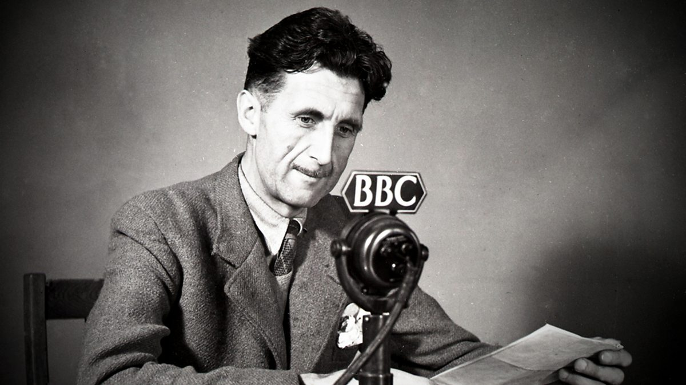
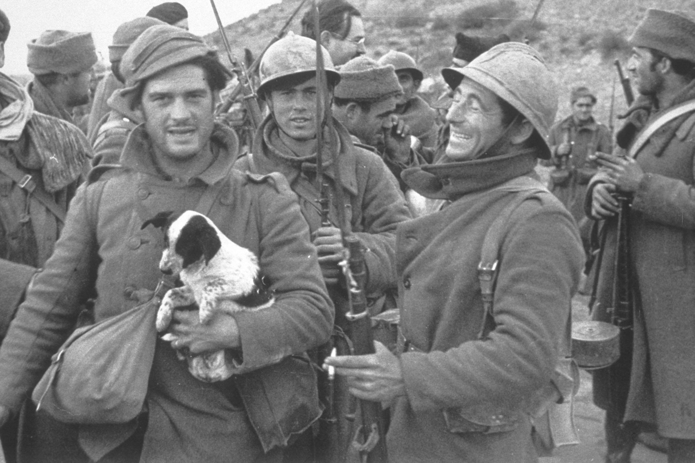
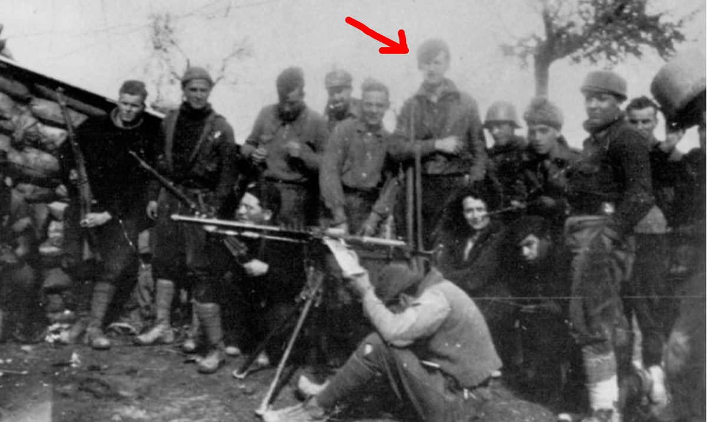
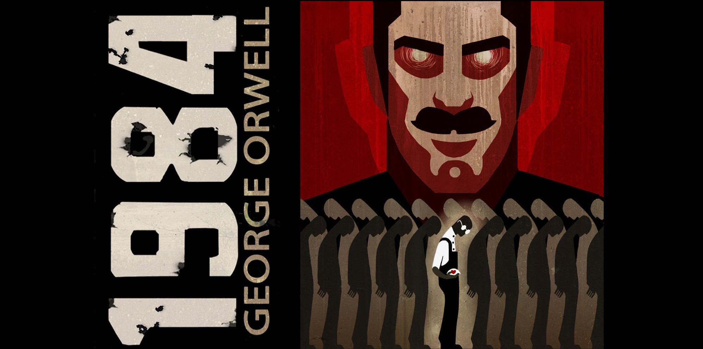

George Orwell, seudónimo de Eric Arthur Blair (1903-1950),
escritor británico políticamente comprometido que ofreció un brillante y apasionado
retrato de su vida y su época.

Orwell nació en Motihari, India, y estudió en el Eton College de Inglaterra gracias a una beca.
Prestó sus servicios en la Policía Imperial India destinado en Birmania, de 1922 a 1927,
fecha en la que regresó a Inglaterra. Enfermo y luchando por abrirse camino como escritor,
vivió durante varios años en la pobreza, primero en París y más tarde en Londres.
Como resultado de esta experiencia escribió un primer libro Sin blanca en París y Londres (1933),
donde relata las sórdidas condiciones de vida de las gentes sin hogar.

En 1936 Orwell luchó en el ejército republicano durante la Guerra Civil española (1936-1939).
El autor describe su experiencia bélica en Homenaje a Cataluña (1938),
uno de los relatos más conmovedores escritos sobre esta guerra
y en el que se hace responsable al Partido Comunista Español (PCE)
y a la Unión Soviética de la destrucción del anarquismo español que supuso el triunfo de la Falange.

Su condena de la sociedad totalitaria queda brillantemente plasmada en una ingeniosa fábula de carácter alegórico,
Rebelión en la granja (1945), basada en la traición de Stalin a la Revolución Rusa,
así como en la novela satírica 1984 (1949).
Esta última ofrece una descripción aterradora de la vida bajo la vigilancia constante del Gran Hermano.
